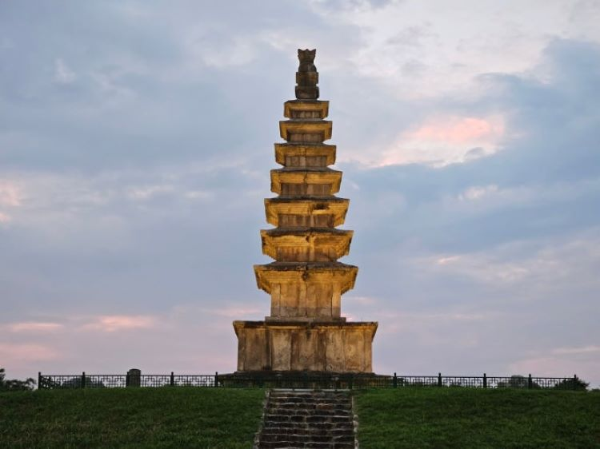

+ 충주중앙탑공원
1. 중앙탑 소개
- 국보인 충주 탑평리 7층 석탑은 남한강의 아름다운 경관과 잘 어우러져 있는 통일신라 시대의 석탑으로,
당시에 세워진 석탑 중 가장 규모가 크며, 우리나라 중앙부에 위치한다고 해서 중앙탑이라고도 부른다.
- 주소: 충청북도 충주시 중앙탑면 중앙탑길 225
2. 주변볼거리

- 충주박물관
- 중원 문화권의 유물 및 유적 등을 보존하고 있다.

- 중앙탑막국수
- 메밀막국수와 메밀치킨을 맛볼 수 있다.

- 탑뷰카페
- 중앙탑을 바라보며 커피를 마실 수 있다.
3. 버스 안내
- 112-1: 시티자이 ↔ 중앙탑 ↔ 터미널
- 411: 노은 ↔ 중앙탑 ↔ 신촌